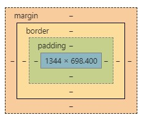
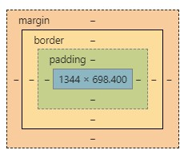

目录
这一节，我们先告别一下难记的属性，来聊一聊css的盒子模型
盒子模型是啥？能吃吗？小朋友你是不是有很多问号？
你有没有在使用谷歌的时候点开过开发者工具？右下角就会出现一堆不同颜色的方框，就像这样：

这是个啥呢？
我们来翻译一下这四个词：margin:外边距,border:边框,padding：内边距,content:内容
这就组成了我们今天要介绍的一个css的重要模型——盒子模型！
对于具体的属性设置，这里先不做介绍了，我们先来算几个数：
现在，开始计算吧！
width=margin_left+border_left+padding_left+content+padding_right+border_right+margin_right
high=margin_top+border_top+padding_top+content+padding_bottom+border_bottom+margin_bottom
是不是很简单呢？
盒子模型是啥？能吃吗？小朋友你是不是有很多问号？
你有没有在使用谷歌的时候点开过开发者工具？右下角就会出现一堆不同颜色的方框，就像这样：

这是个啥呢？
我们来翻译一下这四个词：margin:外边距,border:边框,padding：内边距,content:内容
这就组成了我们今天要介绍的一个css的重要模型——盒子模型！
对于具体的属性设置，这里先不做介绍了，我们先来算几个数：
- 盒子模型的宽度怎么算？
- 盒子模型的高度怎么算？
现在，开始计算吧！
width=margin_left+border_left+padding_left+content+padding_right+border_right+margin_right
high=margin_top+border_top+padding_top+content+padding_bottom+border_bottom+margin_bottom
是不是很简单呢？